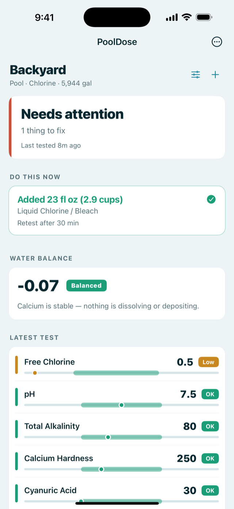
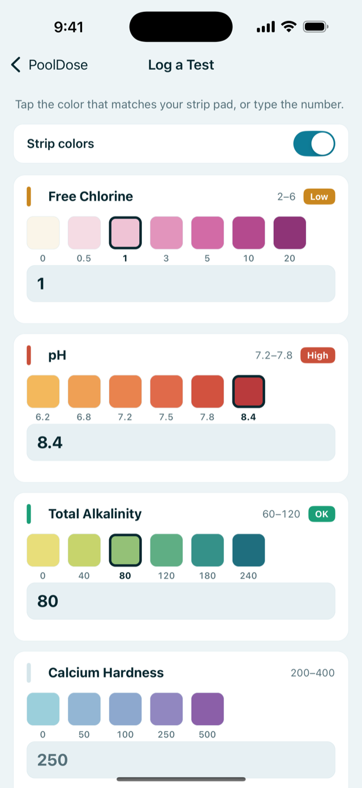
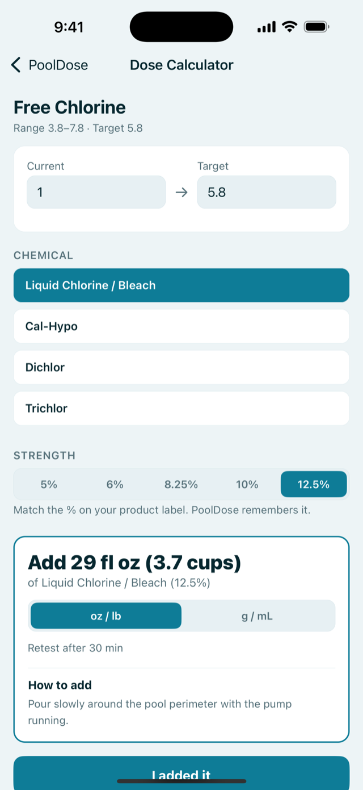
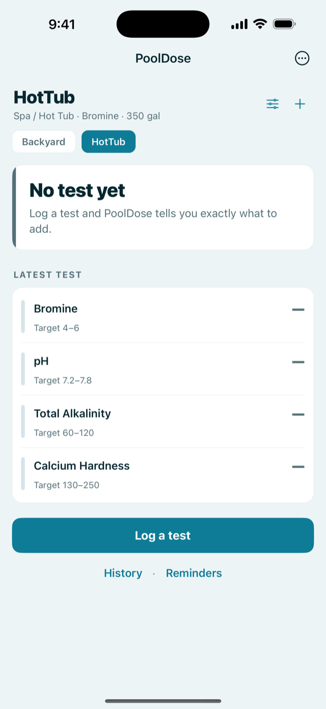

Liquid chlorine 12.5%
61 fl oz
7.7 cups · 1.82 L
- Also adds salt +3.3 ppm
- Retest after 30 min
You have the reading.
Here are the ounces.
Type what the strip says. PoolDose tells you how much to pour — of the jug that is actually in your shed, at the strength printed on its label.
No subscription. Ever. — every dose calculation is free
Your free chlorine pad came out pale pink. Tap the swatch it matches, or type the number.
FC 1.0 Low target 5.0 ppm — because your CYA is 40
PoolDose moves the chlorine target with your stabilizer instead of printing one fixed number. At CYA 40 the floor is 3.0 ppm, so 1.0 is not “a bit low” — it is under the line.
Then — pick the jug you own
Liquid chlorine 12.5%
61 fl oz
7.7 cups · 1.82 L
Cal-hypo 73%
11 oz
312 g
Dichlor granules
14.4 oz
408 g
Same pool, same reading, three different answers — because the jugs are not the same chemical. PoolDose prints what else each one puts in your water, so the shortcut you take in July is not the reason you drain in September.
Every result carries the amount for your exact volume and your product's strength, how to add it, a per-addition safety cap, a split-dose plan when the amount is too large for one go, and how long to wait before you retest. Amounts round toward under-dosing, never over.
Example: 6 lb 4.9 oz of baking soda to take a 15,000 gal pool from 60 to 90 ppm alkalinity is more than one safe addition, so PoolDose splits it into 3 lb + 3 lb + 4.9 oz with a 6-hour wait between each.
Sanitizer first, then alkalinity, then pH, then hardness, stabilizer and salt. Most “my pH won't stay put” problems are alkalinity problems, so alkalinity goes before pH — the app says so on the screen, in that order, with the amount on each line.
Taking that 15,000 gal pool from FC 1 to 10 ppm is 1.08 gal of 12.5% liquid chlorine, or 1 lb 11.7 oz of 65% cal-hypo. The liquid adds 7.4 ppm of salt; the cal-hypo adds 6.3 ppm of calcium hardness. Same shock, different bill later.
Volume comes from a shape template (rectangle, circle, oval, kidney) or straight from a number you type — there is no minimum, so a 350-gallon hot tub is a first-class case, not a rounding error. Target ranges change with the water: a spa on bromine aims at 4–6 ppm bromine, a salt pool aims at 60–80 ppm stabilizer and 2,700–3,400 ppm salt.
Because reading a strip through a camera is the thing people complain about most in the apps that do it. Shade, cloud, a wet lens, a different phone — the colors move, and the app is confidently wrong about your chlorine.
PoolDose puts the swatches on the screen instead. You hold the strip next to the phone and tap the closest pad, or type the number if you use drops. Two colors side by side is something people are genuinely good at. Putting a camera in the middle is what breaks it.




Every dose calculation is free — every chemical, every reading, every sanitizer, for one body of water. The calculator is not the thing being sold.
PoolDose Pro is a single $5.99 purchase. It does not expire and it is not a subscription.
| Free | Pro — $5.99 once | |
|---|---|---|
| Dosing for every chemical, at your product's strength | Yes | Yes |
| Chlorine, salt water and bromine | Yes | Yes |
| Low / OK / High verdicts and the full fix list | Yes | Yes |
| Logging tests and doses | Unlimited | Unlimited |
| Reading your history back | Last 7 days | All of it |
| Trend charts | — | Yes |
| Water balance (LSI) — scaling vs. corrosion | — | Yes |
| Test and maintenance reminders | — | Yes |
| Chemical inventory | — | Yes |
| Your own target ranges | Standard ranges | Editable |
| Pools and hot tubs | One | As many as you like |
| CSV export of every test and dose | — | Yes |
Nothing is deleted when you stay free: entries older than 7 days are kept on your phone and reappear if you ever unlock. The free version also nudges you on screen when it has been 3 days since your last test — you should not have to pay to be reminded to test.
Open Settings → View PoolDose Pro → Restore purchase, signed in with the same Apple ID you bought it with. The unlock belongs to the Apple ID, not the phone, so it moves with you to a new one. If it still says no purchase was found, email me and I will help.
Yes. There is no account, no sign-in and no server — the chemistry runs on your phone. The only time PoolDose needs a connection is when the App Store handles a purchase.
Both, and you can switch the whole app in Settings → Units: gallons or liters, feet or meters for pool dimensions, oz/lb or g/mL for doses, °F or °C for water temperature. Dimension fields always show which unit they are in — feet read as meters is a 35× volume error, and it would be your dose that was wrong.
Chlorine, bromine, alkalinity, calcium, stabilizer and salt are straight stoichiometry from your water volume and the active-ingredient percentage on your product. pH uses a carbonate-plus-cyanurate buffer model, pinned in the test suite against published dosing tables.
You can check the engine yourself: the chlorine calculator on this site runs the same code as the app, in your browser, for free.
Tell me and I will check it. Send your water volume, the reading, the target and the percentage printed on the product label to nosunosukawa@gmail.com, and I will run it against the published tables and reply with the working. Solo developer — I read everything, and replies usually take a day or two.
Enter volume and current/target FC, get the dose for liquid chlorine, cal-hypo, dichlor or trichlor with split-dose limits and side effects. Same engine as the app, in the browser.
A dosage chart for 5,000–25,000 gallon pools, plus what each chlorine product quietly adds to your water besides chlorine.
Amounts to raise total alkalinity by 10–30 ppm by pool size, when a dose has to be split, and the baking soda vs. soda ash question with the side effect quantified.
If the product label and PoolDose disagree, follow the label.
PoolDose gives general guidance based on standard pool chemistry. It is not a substitute for the instructions on your chemical products.